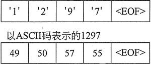
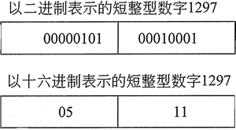

C++二进制文件读写（read和write）详解

图 1 以字符串表示的数字
也可以用一个二进制数字表示，如图 2 所示：

图 2 以二进制表示的数字
这两种表示都可以看作是字节序列。字符串表示取决于用于表示单个字符的编码类型，使用 ASCII 编码时长度为 4 个字节。二进制数字表示中的字节数取决于数字的类型，当数字是短整型时，长度为 2 个字节。从字符串表示到数字的转换称为解析，而从数字到字符串的逆转换称为格式化。
虽然人们发现在字符串表示中使用数字是很自然的，但计算机硬件更适合以二进制形式处理数字。这就是为什么当从键盘输入或从一个编辑过的文件中输入数字时，数字必须经过解析的原因。这也是为什么数字输出为让人查看的形式时必须进行格式化的原因。
但是，有时候程序可能会将数据输出到一个只能被其他程序读取的文件，并且永远不会被人看到。在这些情况下，可以省略在输出期间格式化数字数据和在输入期间解析数字的过程。当数据以非格式化的形式写入时，即可以说它是以二进制形式编写的，用这种方式编写的文件可以称之为二进制文件。相反，保存格式化数据的文件则称为文本文件。
为了方便程序员，流输入操作符
<< 在输出期间提供数字的自动格式化。同样，流提取操作符 >> 提供数字输入的解析。例如，来看以下程序片段：
ofstream file("num.dat");
short x = 12 97;
file << x;
最后一个语句将 x 的内容写入文件。然而，当数字被写入时，它将被存储为字符 '1'、'2'、'9' 和 '7'，如图 1 所示。然而，数字 1297 并不以图 1 所示的方式存储在内存中（在变量 x 中）。它被格式化为一个二进制数，在典型的 PC 上占用 2 个字节。图 2 显示了如何使用二进制或十六进制在内存中表示数字。
图 2 所示数字的未格式化表示是 "原始" 数据存储在内存中的方式。信息可以按纯粹的二进制格式存储在文件中。存储的第一步是以二进制模式打开文件，其方法是使用 ios::binary 标志。示例如下：
file.open("stuff.dat", ios::out | ios::binary);
请注意，ios::out 和 ios::binary 标志使用|运算符联合加入到语句中，这导致文件以输出和二进制模式打开。注意，默认情况下，文件以文本模式打开。
ostream 和 ofstream 类的 write 成员函数可用于将二进制数据写入文件或其他输出流。要调用该函数，需指定一个缓冲区的地址，该缓冲区包含一个要写入的字节数组和一个指示要写入多少字节的整数：write(addressOfBuffer, numberOfBytes);
write 成员函数不会区分缓冲区中的整数、浮点数或其他类型；它只是将缓冲区视为一个字节数组。由于 C++ 不支持指向字节的指针，因此 write 函数原型将指定缓冲区的地址是指向 char 的指针：write(char *addressOfBuffer, int numberOfBytes);
这意味着当调用 write 时，需要告诉编译器将缓冲区的地址解释为指向 diar 的指针。要做到这一点，可以使用称为 reinterpret_cast 的特殊形式的类型转换。简单地说，reinterpret_cast 可用于强制编译器解释一个类型的位，就好像它们定义了一个不同类型的值。以下示例即是使用 reinterpet_cast 将指向 double 的指针转换为指向 char 的指针：
double d = 45.9;
double *pd = &d;
char *pChar;
//将指向double的指针转换为指向char的指针
pChar = reinterpret_cast<char *>(pd);
reinterpret_cast<TargetType>(value);
以下是使用 write 将一个 double 类型数字和一个包含 3 个 double 类型数字的数组写入文件的示例：
double dl = 45.9;
double dArray[3] = { 12.3, 45.8, 19.0 };
ofstream outFile("stuff.dat", ios::binary);
outFile.write(reinterpret_cast<char *>(&dl), sizeof(dl));
outFile.write(reinterpret_cast<char *>(dArray),sizeOf(dArray));
如果正在写入的数据恰好是字符数据，则不需要使用这种转换。以下是一些写入字符数据的示例：
char ch = 'X';
char charArray[5] = "Hello";
outFile.write(&ch, sizeof(ch));
outFile.write(charArray, sizeof(charArray));
read(addressOfBuffer, numberOfBytes)
必须使用 reinterpret_cast 将缓冲区的地址解释为指向 char 的指针。可以通过调用输入流上的 fail() 成员函数来发现指定的字节数是否成功读取。下面的程序演示了 write 和 read 的用法：
//This program uses the write and read functions. #include <iostream> #include <fstream> using namespace std; int main() { //File object used to access file fstream file("nums.dat", ios::out | ios::binary); if (!file) { cout << "Error opening file."; return 0; } //Integer data to write to binary file int buffer[ ] = {1, 2, 3, 4, 5, 6, 7, 8, 9, 10}; int size = sizeof(buffer) / sizeof(buffer[0]); // Write the data and close the file cout << "Now writing the data to the file.\n"; file.write(reinterpret_cast<char *>(buffer), sizeof(buffer)); file.close (); // Open the file and use a binary read to read contents of the file into an array file.open("nums.dat", ios::in); if (!file) { cout << "Error opening file."; return 0; } cout << "Now reading the data back into memory.\n"; file.read(reinterpret_cast<char *>(buffer), sizeof (buffer)); // Write out the array entries for (int count = 0; count < size; count++) cout << buffer[count] << " "; // Close the file file.close (); return 0; }程序屏幕输出：
Now writing the data to the file.
Now reading the data back into memory.
1 2 3 4 5 6 7 8 9 10
int buffer[ ] = {1, 2, 3, 4, 5, 6, 7, 8, 9, 10};
int size = sizeof(buffer)/sizeof(buffer[0]);
关注公众号「站长严长生」，在手机上阅读所有教程，随时随地都能学习。内含一款搜索神器，免费下载全网书籍和视频。

微信扫码关注公众号